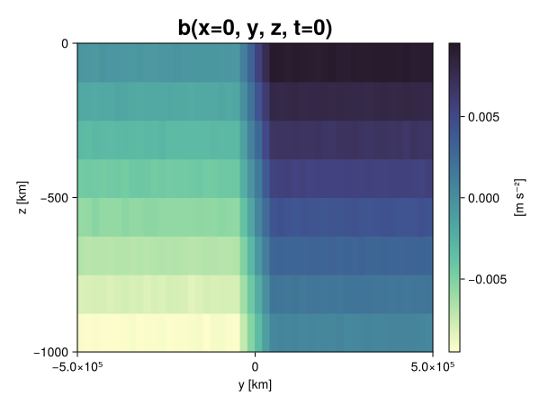
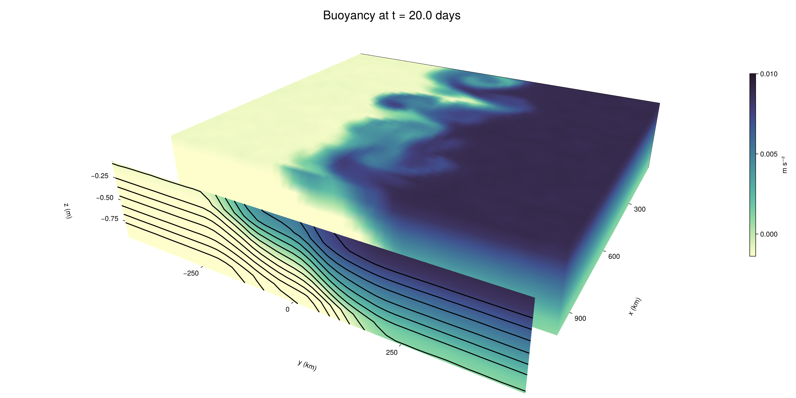

Baroclinic adjustment
In this example, we simulate the evolution and equilibration of a baroclinically unstable front.
Install dependencies
First let's make sure we have all required packages installed.
using Pkg
pkg"add Oceananigans, CairoMakie"using Oceananigans
using Oceananigans.UnitsGrid
We use a three-dimensional channel that is periodic in the x direction:
Lx = 1000kilometers # east-west extent [m]
Ly = 1000kilometers # north-south extent [m]
Lz = 1kilometers # depth [m]
grid = RectilinearGrid(size = (48, 48, 8),
x = (0, Lx),
y = (-Ly/2, Ly/2),
z = (-Lz, 0),
topology = (Periodic, Bounded, Bounded))48×48×8 RectilinearGrid{Float64, Periodic, Bounded, Bounded} on CPU with 3×3×3 halo
├── Periodic x ∈ [0.0, 1.0e6) regularly spaced with Δx=20833.3
├── Bounded y ∈ [-500000.0, 500000.0] regularly spaced with Δy=20833.3
└── Bounded z ∈ [-1000.0, 0.0] regularly spaced with Δz=125.0Model
We built a HydrostaticFreeSurfaceModel with an ImplicitFreeSurface solver. Regarding Coriolis, we use a beta-plane centered at 45° South.
model = HydrostaticFreeSurfaceModel(; grid,
coriolis = BetaPlane(latitude = -45),
buoyancy = BuoyancyTracer(),
tracers = :b,
momentum_advection = WENO(),
tracer_advection = WENO())HydrostaticFreeSurfaceModel{CPU, RectilinearGrid}(time = 0 seconds, iteration = 0)
├── grid: 48×48×8 RectilinearGrid{Float64, Periodic, Bounded, Bounded} on CPU with 3×3×3 halo
├── timestepper: QuasiAdamsBashforth2TimeStepper
├── tracers: b
├── closure: Nothing
├── buoyancy: BuoyancyTracer with ĝ = NegativeZDirection()
├── free surface: ImplicitFreeSurface with gravitational acceleration 9.80665 m s⁻²
│ └── solver: FFTImplicitFreeSurfaceSolver
├── advection scheme:
│ ├── momentum: WENO reconstruction order 5
│ └── b: WENO reconstruction order 5
└── coriolis: BetaPlane{Float64}We start our simulation from rest with a baroclinically unstable buoyancy distribution. We use ramp(y, Δy), defined below, to specify a front with width Δy and horizontal buoyancy gradient M². We impose the front on top of a vertical buoyancy gradient N² and a bit of noise.
"""
ramp(y, Δy)
Linear ramp from 0 to 1 between -Δy/2 and +Δy/2.
For example:
```
y < -Δy/2 => ramp = 0
-Δy/2 < y < -Δy/2 => ramp = y / Δy
y > Δy/2 => ramp = 1
```
"""
ramp(y, Δy) = min(max(0, y/Δy + 1/2), 1)
N² = 1e-5 # [s⁻²] buoyancy frequency / stratification
M² = 1e-7 # [s⁻²] horizontal buoyancy gradient
Δy = 100kilometers # width of the region of the front
Δb = Δy * M² # buoyancy jump associated with the front
ϵb = 1e-2 * Δb # noise amplitude
bᵢ(x, y, z) = N² * z + Δb * ramp(y, Δy) + ϵb * randn()
set!(model, b=bᵢ)Let's visualize the initial buoyancy distribution.
using CairoMakie
# Build coordinates with units of kilometers
x, y, z = 1e-3 .* nodes(grid, (Center(), Center(), Center()))
b = model.tracers.b
fig, ax, hm = heatmap(view(b, 1, :, :),
colormap = :deep,
axis = (xlabel = "y [km]",
ylabel = "z [km]",
title = "b(x=0, y, z, t=0)",
titlesize = 24))
Colorbar(fig[1, 2], hm, label = "[m s⁻²]")
fig
Simulation
Now let's build a Simulation.
simulation = Simulation(model, Δt=20minutes, stop_time=20days)Simulation of HydrostaticFreeSurfaceModel{CPU, RectilinearGrid}(time = 0 seconds, iteration = 0)
├── Next time step: 20 minutes
├── Elapsed wall time: 0 seconds
├── Wall time per iteration: NaN days
├── Stop time: 20 days
├── Stop iteration : Inf
├── Wall time limit: Inf
├── Callbacks: OrderedDict with 4 entries:
│ ├── stop_time_exceeded => Callback of stop_time_exceeded on IterationInterval(1)
│ ├── stop_iteration_exceeded => Callback of stop_iteration_exceeded on IterationInterval(1)
│ ├── wall_time_limit_exceeded => Callback of wall_time_limit_exceeded on IterationInterval(1)
│ └── nan_checker => Callback of NaNChecker for u on IterationInterval(100)
├── Output writers: OrderedDict with no entries
└── Diagnostics: OrderedDict with no entriesWe add a TimeStepWizard callback to adapt the simulation's time-step,
conjure_time_step_wizard!(simulation, IterationInterval(20), cfl=0.2, max_Δt=20minutes)Also, we add a callback to print a message about how the simulation is going,
using Printf
wall_clock = Ref(time_ns())
function print_progress(sim)
u, v, w = model.velocities
progress = 100 * (time(sim) / sim.stop_time)
elapsed = (time_ns() - wall_clock[]) / 1e9
@printf("[%05.2f%%] i: %d, t: %s, wall time: %s, max(u): (%6.3e, %6.3e, %6.3e) m/s, next Δt: %s\n",
progress, iteration(sim), prettytime(sim), prettytime(elapsed),
maximum(abs, u), maximum(abs, v), maximum(abs, w), prettytime(sim.Δt))
wall_clock[] = time_ns()
return nothing
end
add_callback!(simulation, print_progress, IterationInterval(100))Diagnostics/Output
Here, we save the buoyancy, $b$, at the edges of our domain as well as the zonal ($x$) average of buoyancy.
u, v, w = model.velocities
ζ = ∂x(v) - ∂y(u)
B = Average(b, dims=1)
U = Average(u, dims=1)
V = Average(v, dims=1)
filename = "baroclinic_adjustment"
save_fields_interval = 0.5day
slicers = (east = (grid.Nx, :, :),
north = (:, grid.Ny, :),
bottom = (:, :, 1),
top = (:, :, grid.Nz))
for side in keys(slicers)
indices = slicers[side]
simulation.output_writers[side] = JLD2OutputWriter(model, (; b, ζ);
filename = filename * "_$(side)_slice",
schedule = TimeInterval(save_fields_interval),
overwrite_existing = true,
indices)
end
simulation.output_writers[:zonal] = JLD2OutputWriter(model, (; b=B, u=U, v=V);
filename = filename * "_zonal_average",
schedule = TimeInterval(save_fields_interval),
overwrite_existing = true)JLD2OutputWriter scheduled on TimeInterval(12 hours):
├── filepath: ./baroclinic_adjustment_zonal_average.jld2
├── 3 outputs: (b, u, v)
├── array type: Array{Float64}
├── including: [:grid, :coriolis, :buoyancy, :closure]
├── file_splitting: NoFileSplitting
└── file size: 30.7 KiBNow we're ready to run.
@info "Running the simulation..."
run!(simulation)
@info "Simulation completed in " * prettytime(simulation.run_wall_time)[ Info: Running the simulation...
[ Info: Initializing simulation...
[00.00%] i: 0, t: 0 seconds, wall time: 21.355 seconds, max(u): (0.000e+00, 0.000e+00, 0.000e+00) m/s, next Δt: 20 minutes
[ Info: ... simulation initialization complete (21.834 seconds)
[ Info: Executing initial time step...
[ Info: ... initial time step complete (22.009 seconds).
[06.94%] i: 100, t: 1.389 days, wall time: 35.495 seconds, max(u): (1.270e-01, 1.189e-01, 1.490e-03) m/s, next Δt: 20 minutes
[13.89%] i: 200, t: 2.778 days, wall time: 916.285 ms, max(u): (2.148e-01, 1.723e-01, 1.757e-03) m/s, next Δt: 20 minutes
[20.83%] i: 300, t: 4.167 days, wall time: 794.158 ms, max(u): (2.950e-01, 2.362e-01, 1.755e-03) m/s, next Δt: 20 minutes
[27.78%] i: 400, t: 5.556 days, wall time: 935.910 ms, max(u): (3.621e-01, 3.276e-01, 1.795e-03) m/s, next Δt: 20 minutes
[34.72%] i: 500, t: 6.944 days, wall time: 847.349 ms, max(u): (4.389e-01, 5.097e-01, 1.984e-03) m/s, next Δt: 20 minutes
[41.67%] i: 600, t: 8.333 days, wall time: 889.284 ms, max(u): (5.931e-01, 8.063e-01, 2.829e-03) m/s, next Δt: 20 minutes
[48.61%] i: 700, t: 9.722 days, wall time: 924.326 ms, max(u): (8.123e-01, 1.153e+00, 4.012e-03) m/s, next Δt: 20 minutes
[55.56%] i: 800, t: 11.111 days, wall time: 895.855 ms, max(u): (1.266e+00, 1.303e+00, 4.687e-03) m/s, next Δt: 20 minutes
[62.50%] i: 900, t: 12.500 days, wall time: 994.888 ms, max(u): (1.415e+00, 1.246e+00, 5.310e-03) m/s, next Δt: 20 minutes
[69.44%] i: 1000, t: 13.889 days, wall time: 787.660 ms, max(u): (1.391e+00, 1.116e+00, 3.714e-03) m/s, next Δt: 20 minutes
[76.39%] i: 1100, t: 15.278 days, wall time: 858.546 ms, max(u): (1.351e+00, 9.919e-01, 2.954e-03) m/s, next Δt: 20 minutes
[83.33%] i: 1200, t: 16.667 days, wall time: 815.803 ms, max(u): (1.255e+00, 1.244e+00, 3.608e-03) m/s, next Δt: 20 minutes
[90.28%] i: 1300, t: 18.056 days, wall time: 867.273 ms, max(u): (1.357e+00, 1.156e+00, 3.153e-03) m/s, next Δt: 20 minutes
[97.22%] i: 1400, t: 19.444 days, wall time: 777.508 ms, max(u): (1.382e+00, 1.077e+00, 2.761e-03) m/s, next Δt: 20 minutes
[ Info: Simulation is stopping after running for 59.394 seconds.
[ Info: Simulation time 20 days equals or exceeds stop time 20 days.
[ Info: Simulation completed in 59.427 seconds
Visualization
All that's left is to make a pretty movie. Actually, we make two visualizations here. First, we illustrate how to make a 3D visualization with Makie's Axis3 and Makie.surface. Then we make a movie in 2D. We use CairoMakie in this example, but note that using GLMakie is more convenient on a system with OpenGL, as figures will be displayed on the screen.
using CairoMakieThree-dimensional visualization
We load the saved buoyancy output on the top, north, and east surface as FieldTimeSerieses.
filename = "baroclinic_adjustment"
sides = keys(slicers)
slice_filenames = NamedTuple(side => filename * "_$(side)_slice.jld2" for side in sides)
b_timeserieses = (east = FieldTimeSeries(slice_filenames.east, "b"),
north = FieldTimeSeries(slice_filenames.north, "b"),
top = FieldTimeSeries(slice_filenames.top, "b"))
B_timeseries = FieldTimeSeries(filename * "_zonal_average.jld2", "b")
times = B_timeseries.times
grid = B_timeseries.grid48×48×8 RectilinearGrid{Float64, Periodic, Bounded, Bounded} on CPU with 3×3×3 halo
├── Periodic x ∈ [0.0, 1.0e6) regularly spaced with Δx=20833.3
├── Bounded y ∈ [-500000.0, 500000.0] regularly spaced with Δy=20833.3
└── Bounded z ∈ [-1000.0, 0.0] regularly spaced with Δz=125.0We build the coordinates. We rescale horizontal coordinates to kilometers.
xb, yb, zb = nodes(b_timeserieses.east)
xb = xb ./ 1e3 # convert m -> km
yb = yb ./ 1e3 # convert m -> km
Nx, Ny, Nz = size(grid)
x_xz = repeat(x, 1, Nz)
y_xz_north = y[end] * ones(Nx, Nz)
z_xz = repeat(reshape(z, 1, Nz), Nx, 1)
x_yz_east = x[end] * ones(Ny, Nz)
y_yz = repeat(y, 1, Nz)
z_yz = repeat(reshape(z, 1, Nz), grid.Ny, 1)
x_xy = x
y_xy = y
z_xy_top = z[end] * ones(grid.Nx, grid.Ny)Then we create a 3D axis. We use zonal_slice_displacement to control where the plot of the instantaneous zonal average flow is located.
fig = Figure(size = (1600, 800))
zonal_slice_displacement = 1.2
ax = Axis3(fig[2, 1],
aspect=(1, 1, 1/5),
xlabel = "x (km)",
ylabel = "y (km)",
zlabel = "z (m)",
xlabeloffset = 100,
ylabeloffset = 100,
zlabeloffset = 100,
limits = ((x[1], zonal_slice_displacement * x[end]), (y[1], y[end]), (z[1], z[end])),
elevation = 0.45,
azimuth = 6.8,
xspinesvisible = false,
zgridvisible = false,
protrusions = 40,
perspectiveness = 0.7)Axis3()We use data from the final savepoint for the 3D plot. Note that this plot can easily be animated by using Makie's Observable. To dive into Observables, check out Makie.jl's Documentation.
n = length(times)41Now let's make a 3D plot of the buoyancy and in front of it we'll use the zonally-averaged output to plot the instantaneous zonal-average of the buoyancy.
b_slices = (east = interior(b_timeserieses.east[n], 1, :, :),
north = interior(b_timeserieses.north[n], :, 1, :),
top = interior(b_timeserieses.top[n], :, :, 1))
# Zonally-averaged buoyancy
B = interior(B_timeseries[n], 1, :, :)
clims = 1.1 .* extrema(b_timeserieses.top[n][:])
kwargs = (colorrange=clims, colormap=:deep, shading=NoShading)
surface!(ax, x_yz_east, y_yz, z_yz; color = b_slices.east, kwargs...)
surface!(ax, x_xz, y_xz_north, z_xz; color = b_slices.north, kwargs...)
surface!(ax, x_xy, y_xy, z_xy_top; color = b_slices.top, kwargs...)
sf = surface!(ax, zonal_slice_displacement .* x_yz_east, y_yz, z_yz; color = B, kwargs...)
contour!(ax, y, z, B; transformation = (:yz, zonal_slice_displacement * x[end]),
levels = 15, linewidth = 2, color = :black)
Colorbar(fig[2, 2], sf, label = "m s⁻²", height = Relative(0.4), tellheight=false)
title = "Buoyancy at t = " * string(round(times[n] / day, digits=1)) * " days"
fig[1, 1:2] = Label(fig, title; fontsize = 24, tellwidth = false, padding = (0, 0, -120, 0))
rowgap!(fig.layout, 1, Relative(-0.2))
colgap!(fig.layout, 1, Relative(-0.1))
save("baroclinic_adjustment_3d.png", fig)
Two-dimensional movie
We make a 2D movie that shows buoyancy $b$ and vertical vorticity $ζ$ at the surface, as well as the zonally-averaged zonal and meridional velocities $U$ and $V$ in the $(y, z)$ plane. First we load the FieldTimeSeries and extract the additional coordinates we'll need for plotting
ζ_timeseries = FieldTimeSeries(slice_filenames.top, "ζ")
U_timeseries = FieldTimeSeries(filename * "_zonal_average.jld2", "u")
B_timeseries = FieldTimeSeries(filename * "_zonal_average.jld2", "b")
V_timeseries = FieldTimeSeries(filename * "_zonal_average.jld2", "v")
xζ, yζ, zζ = nodes(ζ_timeseries)
yv = ynodes(V_timeseries)
xζ = xζ ./ 1e3 # convert m -> km
yζ = yζ ./ 1e3 # convert m -> km
yv = yv ./ 1e3 # convert m -> km49-element Vector{Float64}:
-500.0
-479.1666666666667
-458.3333333333333
-437.5
-416.6666666666667
-395.8333333333333
-375.0
-354.1666666666667
-333.3333333333333
-312.5
-291.6666666666667
-270.8333333333333
-250.0
-229.16666666666666
-208.33333333333334
-187.5
-166.66666666666666
-145.83333333333334
-125.0
-104.16666666666667
-83.33333333333333
-62.5
-41.666666666666664
-20.833333333333332
0.0
20.833333333333332
41.666666666666664
62.5
83.33333333333333
104.16666666666667
125.0
145.83333333333334
166.66666666666666
187.5
208.33333333333334
229.16666666666666
250.0
270.8333333333333
291.6666666666667
312.5
333.3333333333333
354.1666666666667
375.0
395.8333333333333
416.6666666666667
437.5
458.3333333333333
479.1666666666667
500.0Next, we set up a plot with 4 panels. The top panels are large and square, while the bottom panels get a reduced aspect ratio through rowsize!.
set_theme!(Theme(fontsize=24))
fig = Figure(size=(1800, 1000))
axb = Axis(fig[1, 2], xlabel="x (km)", ylabel="y (km)", aspect=1)
axζ = Axis(fig[1, 3], xlabel="x (km)", ylabel="y (km)", aspect=1, yaxisposition=:right)
axu = Axis(fig[2, 2], xlabel="y (km)", ylabel="z (m)")
axv = Axis(fig[2, 3], xlabel="y (km)", ylabel="z (m)", yaxisposition=:right)
rowsize!(fig.layout, 2, Relative(0.3))To prepare a plot for animation, we index the timeseries with an Observable,
n = Observable(1)
b_top = @lift interior(b_timeserieses.top[$n], :, :, 1)
ζ_top = @lift interior(ζ_timeseries[$n], :, :, 1)
U = @lift interior(U_timeseries[$n], 1, :, :)
V = @lift interior(V_timeseries[$n], 1, :, :)
B = @lift interior(B_timeseries[$n], 1, :, :)Observable([-0.009379013278674042 -0.008127308340111258 -0.006895118414278083 -0.005635238245585567 -0.004368722217176891 -0.0031348715816802747 -0.0018740902201309906 -0.0006276281352474621; -0.009372265443450144 -0.008140715154045105 -0.006882906118859548 -0.0056446787730813006 -0.004357427931896488 -0.0031295764398765777 -0.0018793759724824836 -0.000618446581138786; -0.009384490708439816 -0.008115533977155863 -0.00689981593059272 -0.005614357156514475 -0.004348320799092891 -0.0031109386085407266 -0.0018742898329039952 -0.0006213361250729743; -0.009366099334741923 -0.00809728343351363 -0.0068765534963990994 -0.005614265993299803 -0.004392771780484949 -0.0031463562892209283 -0.0018940966397047211 -0.0006369836732000078; -0.009387913810331543 -0.008123669545950648 -0.006886170250974856 -0.005624638849236947 -0.004357073833181801 -0.0031132999457823816 -0.0018493270892349291 -0.0006476311596959881; -0.009402895720817593 -0.008144581495229277 -0.006903029724651004 -0.005621248399023326 -0.004369433691553385 -0.0031411407444263393 -0.0018821002537103167 -0.0006224024478736984; -0.009371669995809349 -0.008115708798264502 -0.0068817045598975725 -0.00561353463389739 -0.004384337052017278 -0.0031233302289233136 -0.0018735928968347945 -0.0006558542235369766; -0.009382906878551185 -0.00811487218784703 -0.006894554292141701 -0.005630906923908688 -0.0043735217210431445 -0.0031361248841603553 -0.0018817273007011668 -0.0006357035641146452; -0.00936296183558858 -0.008120178469130915 -0.006864601485771095 -0.005634200977769794 -0.004362577214737688 -0.0031025951564980308 -0.0018534377688827531 -0.0006203256312698897; -0.0093918502621301 -0.008125285112883705 -0.00690049398432787 -0.005631107682949059 -0.004370881931822373 -0.0031102737167390294 -0.0018897707991432668 -0.0006299597733987276; -0.009375693904006823 -0.008116881597466924 -0.006874001847780055 -0.005619413053188481 -0.004371313359970787 -0.003132508603060897 -0.0018744532072311685 -0.0006267424056766996; -0.009363045907267442 -0.00811708898872489 -0.00687577156426829 -0.005647363099913256 -0.004402418699035625 -0.003104233843336813 -0.0018764243592709487 -0.000623084818609189; -0.009366226768674378 -0.008121765080847422 -0.0068643052986193205 -0.00563507223189585 -0.004379340225241672 -0.0031187689985471556 -0.001862959672433828 -0.0006280828452376481; -0.009363961424112636 -0.00808734619823801 -0.006875605666878425 -0.005621771988425109 -0.004401236482280291 -0.003106746147192415 -0.0018984872649167402 -0.0006253917046664967; -0.00938291940294383 -0.008119582423614541 -0.006855651004762296 -0.005600241365405308 -0.00437659725575294 -0.0031364925829255904 -0.0018785727192520824 -0.0006021229510002708; -0.009386802521334487 -0.008102813121501134 -0.006892307018639995 -0.005614904584690911 -0.004385541896803983 -0.0031155730207128693 -0.0018815898088100109 -0.0006520678671506053; -0.009382103116853219 -0.008122337816923808 -0.006876539507588826 -0.005627874775868129 -0.004367566809145648 -0.003122671154111092 -0.0018658106553950916 -0.0006704036545262495; -0.009363727066462704 -0.008117046650244505 -0.006888316007333262 -0.005611409645003999 -0.004360817112375852 -0.003118212765021279 -0.0018746126358630795 -0.0006194395020103382; -0.00936519821857671 -0.00812379077446163 -0.0068937395424461785 -0.005609120782702204 -0.004372320572146895 -0.0031023549352545096 -0.0018786984087050455 -0.0006190580536854813; -0.009362117248327877 -0.008138145214735224 -0.006879632179591987 -0.0056093473855697296 -0.004385900767678475 -0.00310118975456935 -0.0018669352042337951 -0.0006451739148330282; -0.009380765881301488 -0.008128257804114655 -0.006900367100319558 -0.005648392564074685 -0.004359763631678379 -0.0031220401568196124 -0.0018798540695311751 -0.0005898465757784615; -0.009384956934987905 -0.008106931944433226 -0.00688448028028672 -0.005629747300902991 -0.004355960727626754 -0.003118747033432763 -0.0018912070591455485 -0.0006430677069617242; -0.007503666378540357 -0.006239129037321205 -0.004991539038334242 -0.0037350658347299927 -0.0024970425181581606 -0.0012611732925280194 -1.3899060676860904e-5 0.0012344761785343247; -0.005400172281676662 -0.004150906140712199 -0.002909294922433058 -0.0016930069926858924 -0.0003869291576834622 0.0008293477341013645 0.002071532311221234 0.0033243795213564165; -0.0033490907685160497 -0.002072160780984874 -0.0008205357726966903 0.00040460493846421024 0.001673366397780405 0.002912256620200792 0.004164838950927652 0.005397147055148897; -0.0012526533217848228 9.924147502486399e-8 0.0012179694475421333 0.0024768643060268246 0.0037427704540379096 0.004993346994842565 0.006263438234946611 0.0074872692013157995; 0.000600599871867703 0.0018769749181178884 0.0031293105498026597 0.004375708153809739 0.0056100157011602465 0.006867370976313122 0.00812719696017402 0.009379330842538657; 0.0006290552666164372 0.001869107395062071 0.0031111415178789654 0.004357845759599928 0.005645789675134796 0.006854331260117631 0.008145921300252603 0.009370139873127467; 0.0006268087383505157 0.0018765905138595606 0.003117556400917028 0.004385390739687864 0.005625068385243768 0.006868448486695166 0.00812680134607187 0.009368128342497948; 0.0006391424201780269 0.0018873704312386394 0.0031220433751923404 0.004367772192748857 0.005633001743633481 0.006916410337860955 0.008126551069897459 0.009383505743978499; 0.000652752624965296 0.001861374510185962 0.003134675799076657 0.0043520941629697635 0.005616514801579484 0.006872398840875339 0.008119681853351992 0.009363236514310532; 0.0006182214582413956 0.0018822787596052889 0.0031146742688727747 0.004385388620122729 0.005642775457927379 0.006883267736744569 0.00812680904443272 0.009357859015290891; 0.0006241104958211345 0.0018886843199511923 0.0031369258505023517 0.004358390011675271 0.005645883724985035 0.006884982478296625 0.008130407612966102 0.009372763838597559; 0.0006212491263522475 0.0018915445393969798 0.0031201348398727908 0.004381221931808506 0.005626247991056048 0.006850768069024416 0.00810302075962555 0.00937683094023798; 0.0006440587685837667 0.001851230619731926 0.003137472621318308 0.004372801296171347 0.005596780124476304 0.006853246399779443 0.008132608463314992 0.00937592231377437; 0.0006381312060304293 0.0018715694304426791 0.003144214013586387 0.004340685497720245 0.005600348433077278 0.006860222891735733 0.008146053785193867 0.009379721106924253; 0.0006116470836519341 0.0018936394825613291 0.0031009642895472845 0.004365055972606638 0.005616103348598189 0.006875533524454947 0.008134306516969213 0.009372408999824784; 0.0006353550544820046 0.0018714549261951846 0.00312666297286448 0.004383356566143511 0.0056481622767231504 0.006894472388533489 0.008129390626736637 0.009369277404045659; 0.000635735743042849 0.0018841751280869613 0.0031422937905489505 0.004363556065332542 0.005605310463916967 0.006863748785925051 0.008117251511311417 0.009413523577314474; 0.0006174454203065989 0.001886741629998586 0.003104800147184502 0.004379074531667639 0.005648858229448157 0.006862028379256753 0.008108319798936699 0.009359964006661498; 0.0005898660118773921 0.0018652235392056689 0.0031299945265430285 0.004384356645395641 0.005612806164454723 0.006887431534981122 0.008124193670860941 0.009382155942588117; 0.0006169298181433009 0.0018805662081683135 0.003115991749448628 0.004376856659669242 0.005621179279744357 0.006875164341231255 0.008123345806979801 0.009365133926220234; 0.0006437225523010919 0.00187428769721536 0.0031268495269352182 0.004361358036233726 0.00558547025820266 0.006847726499789398 0.008153034932655834 0.009383971419340621; 0.0006078376775795401 0.0018908317170796681 0.0031344546174662236 0.004355153268506677 0.005612647842468989 0.006871131397366971 0.008119534131344591 0.009377546534460055; 0.0006390765176104338 0.0018970425999500801 0.0031289041266241505 0.004377576971664615 0.005616173104520074 0.0068790201258269595 0.00812685593420596 0.009374061070972347; 0.0006455074232289585 0.0018640784657003937 0.003121395144829283 0.0043740748512039315 0.005626177252413173 0.006887023326973873 0.008114381021836113 0.009360535083334256; 0.0006238250284262658 0.0018875180473706982 0.0031313700817594222 0.004396321253789206 0.005608730187373272 0.0068714716021518974 0.00814702485515198 0.009360129887740013; 0.0006308087878711342 0.001868590056353341 0.0031130498099143596 0.004364979393328247 0.005624993846879661 0.0068870538466861515 0.008106470768795037 0.00937468438683155])
and then build our plot:
hm = heatmap!(axb, xb, yb, b_top, colorrange=(0, Δb), colormap=:thermal)
Colorbar(fig[1, 1], hm, flipaxis=false, label="Surface b(x, y) (m s⁻²)")
hm = heatmap!(axζ, xζ, yζ, ζ_top, colorrange=(-5e-5, 5e-5), colormap=:balance)
Colorbar(fig[1, 4], hm, label="Surface ζ(x, y) (s⁻¹)")
hm = heatmap!(axu, yb, zb, U; colorrange=(-5e-1, 5e-1), colormap=:balance)
Colorbar(fig[2, 1], hm, flipaxis=false, label="Zonally-averaged U(y, z) (m s⁻¹)")
contour!(axu, yb, zb, B; levels=15, color=:black)
hm = heatmap!(axv, yv, zb, V; colorrange=(-1e-1, 1e-1), colormap=:balance)
Colorbar(fig[2, 4], hm, label="Zonally-averaged V(y, z) (m s⁻¹)")
contour!(axv, yb, zb, B; levels=15, color=:black)Finally, we're ready to record the movie.
frames = 1:length(times)
record(fig, filename * ".mp4", frames, framerate=8) do i
n[] = i
endThis page was generated using Literate.jl.